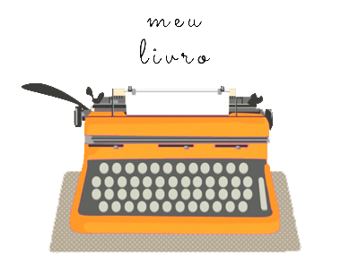

A Editora
Temos como objetivo principal publicar livros de interesse geral , pensados para leitores digitais. Seguindo as normas internacionais de publicação digital, o e-book é produzido igual ao livro físico, passando pela avaliação, preparação, edição e revisão na editora. Todas as ferramentas utilizadas são específicas para plataformas digitais.
Ebook
Quando pensamos em uma publicação digital, sabemos que se trata de uma leitura em dispositivos eletrônicos, principalmente computadores, tablets e celulares. A Editora Assembler faz parte desse mundo, mas acredita que o livro do futuro ainda não explorou todas as suas características, principalmente as de conectividade. Qualquer livro é mais do que sua forma física: é conteúdo; e ter em mãos uma biblioteca é o atrativo do momento.
A proposta da EA é criar livros para dispositivos móveis, seja qual for o modelo que você tenha em suas mãos. O texto deve se adaptar a ele. Segundo o Fórum Internacional de Publicação Eletrônica (IDPF), um livro digital deve permitir a leitura fluída e dinâmica, aquela se assemelha ao livro de papel. No aplicativo certo, seu livro se encaixa como água, adaptando-se a ele. Os leitores digitais permitem ainda aumentar a letra, diminuir o brilho, mudar as cores, fazer anotações entre outras comodidades para o leitor.
Publique-se
Autores e escritores criam um mundo, contam histórias ou narram façanhas de forma tão exclusiva que conquistam admiradores pelo mundo inteiro. Se você é um escritor e quer publicar seu livro, então melhor pesquisar as editoras antes de mandar seu original. Além de conhecer a linha editoral de cada uma delas, você entenderá os tipos de publicação que existem.
Autopublicação
A autopublicação já existe há algum tempo, mas está se tornando muito popular pelos avanços tecnológicos, principalmente na tipografia. É para quem está satisfeito com sua obra e quer publicá-la do jeito que está. O escritor não passa por avaliação, seleção nem edições.
Entretanto, para finalização é preciso ainda formatar seu livro. Algumas editoras de autopublicação possuem plataformas online que possibilitam esse trabalho de configuração de textos e imagens. Baixe sua obra, escolha o tipo e o tamanho de papel, o número de tiragem e pronto. Informe-se sobre os serviços dessas editoras, que variam desde editoração simples até pacotes completos que incluem revisão, ISBN, marketing e venda. Em regra, o autor paga pela autopublicação e a maioria das empresas cobram assim que o contrato de serviços editoriais é assinado. Algumas, poucas empresas, optam pelo método tradicional de mercado, ganhando com as vendas da obra.
Publicação tradicional
A principal diferença entre uma editora tradicional e de autopublicação está na decisão de publicação. Na editora tradicional, sua obra passa por uma avaliação e, se ela for aceita, sofrerá as mudanças que o editor achar necessário para deixar seu livro a cara da editora. Se aceito, o autor assina um contrato de cessão de direitos de publicação da obra. São os Direitos Autorais e, falando bem claro, você passa para a editora o direito de vender seu livro. O valor que o escritor recebe é de até 10% sobre as vendas, essa é a prática comum do mercado - esse percentual pode variar um pouco. Os serviços da editora tradicional incluem: avaliação, preparação, edição, arte, diagramação, revisão, provas, registro de direitos autorais, distribuição, marketing e vendas. Não se cobra nada do autor, mas a decisão de publicar é do editor. Se você for atrás de uma editora tradicional, vá de mente aberta e com sua obra nas mãos. Nenhuma negociação começa sem a leitura do original pelo editor.
